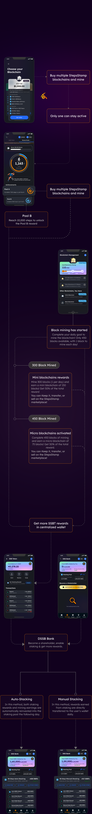
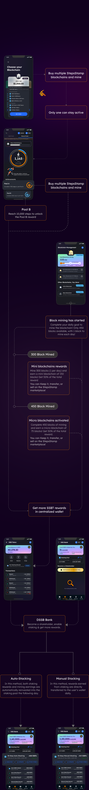

This is how our user journey looks like.
Connect real-life steps with earning cryptos - Walk more to earn more by participating in less crowded POOLS
| Blockchain Type | Daily SSBT | Pool A (50%) | Pool B (50%) |
|---|---|---|---|
| White | 767 SSBT | 383,50 SSBT | 383,50 SSBT |
| Black | 1,150 SSBT | 575,00 SSBT | 575,00 SSBT |
| Silver | 1,534 SSBT | 767,00 SSBT | 767,00 SSBT |
| Gold | 1,919 SSBT | 959,50 SSBT | 959,50 SSBT |
| Green | 2,299 SSBT | 1.149,50 SSBT | 1.149,50 SSBT |
○ Pool A: 1.149,50 SSBT (for 1.500–9.999 POM, distributed proportionally).
○ Pool B: 1.149,50 SSBT (for 10.000+ POM, distributed equally).
Please add here all mini and micro StepsStamp Blockchain Names or Codes: e.g. W450, W150, and W75 ( W stands for White StepsStamp Blockchain, and 450 stands for 450 Blocks)
If you own a Green Blockchain and your referral buys a White Blockchain (100
BUSD), you earn:
15% of 100 BUSD = 15 BUSD → Converted to SSBT at the current price (e.g.,
Phase A: 0.05 BUSD/SSBT) → 300 SSBT sent to your wallet!
● Example: Green Blockchain costs 10,000 BUSD → 20% = 2,000 BUSD → 2,000 / 0.05 = 40,000 SSBT.
First come, first served! Claim yours before they’re gone.
Please add here: Phases A-E withdrawal limits value table or following table for Phase A.
| Blockchain | Price (BUSD) |
Welcome
Bonus (SSBT) |
Watch
Bonus (SSBT/Day) |
Investor Bonus (SSBT/Day for 30 Days) |
Total
Withdraw Limit (BUSD) |
|---|---|---|---|---|---|
| White | 100 BUSD |
400 SSBT | 0 | 1 SSBT | 10 BUSD |
| Black | 500 BUSD |
2,000 SSBT | 0 | 5 SSBT | 50 BUSD |
| Silver | 1,000 BUSD |
4,000 SSBT | 10 SSBT (300 Days) |
16 SSBT | 100 BUSD |
| Green | 10,000 BUSD |
40,000 SSBT |
100 SSBT (730 Days) |
500 SSBT | 1,000 BUSD |
| Gold | 5,000 BUSD |
20,000 SSBT | 50 SSBT (450 Days) |
167 SSBT | 500 BUSD |
| Blockchain Type | Daily SSBT | Pool A (50%) | Pool B (50%) |
|---|---|---|---|
| White | 767 SSBT | 383,50 SSBT | 383,50 SSBT |
| Black | 1,150 SSBT | 575,00 SSBT | 575,00 SSBT |
| Silver | 1,534 SSBT | 767,00 SSBT | 767,00 SSBT |
| Gold | 1,919 SSBT | 959,50 SSBT | 959,50 SSBT |
| Green | 2,299 SSBT BUSD |
1.149,50 SSBT | 1.149,50 SSBT |
○ Pool A: 1.149,50 SSBT (for 1.500–9.999 POM, distributed proportionally).
○ Pool B: 1.149,50 SSBT (for 10.000+ POM, distributed equally).
What people usually asked about us.
Feel free to send us your questions or request a free consultation.